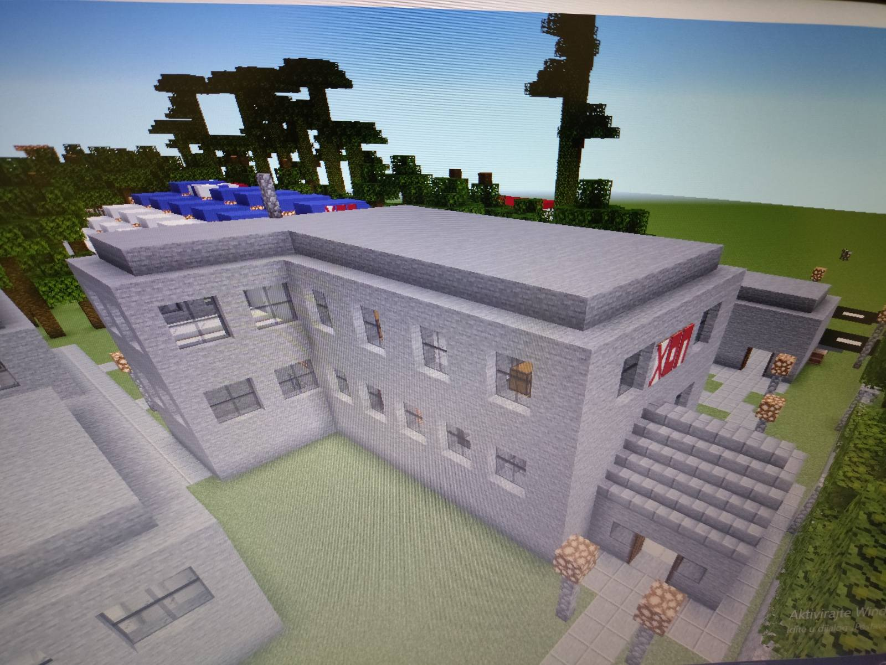

POMOCNI BLOK JE DRUGA HOTELSKA ZGRADA PETROVCA
U POMOCNOM BLOKU SE NALAZI:
- CETIRI VELIKE DESETOKREVETNE SOBE
- VELIKO ZAJEDNICKO KUPATILO
- SPORTSKU SALU
UKUPAN KAPACITET POMOCNOG BLOKA JE CAK 40 GOSTIJU
 VIDI SLIKE
Vas direktor i vlasnik Milos Mecava